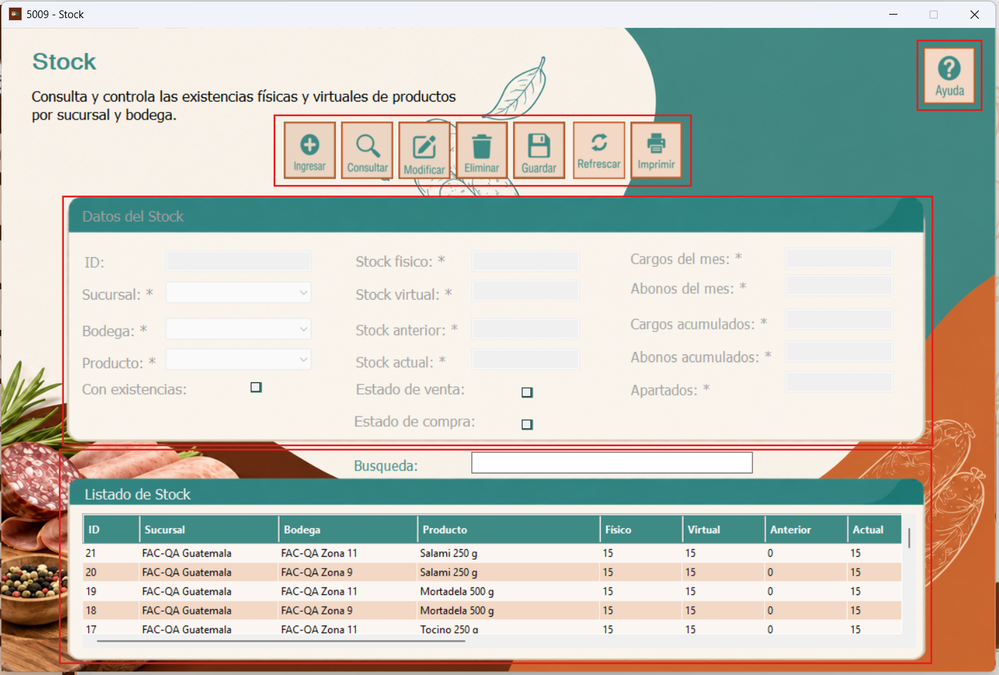
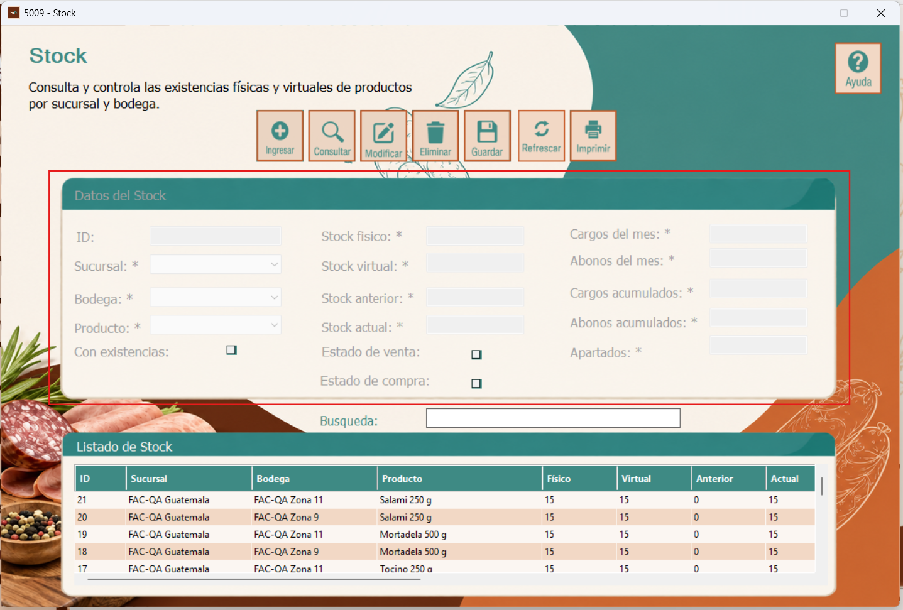
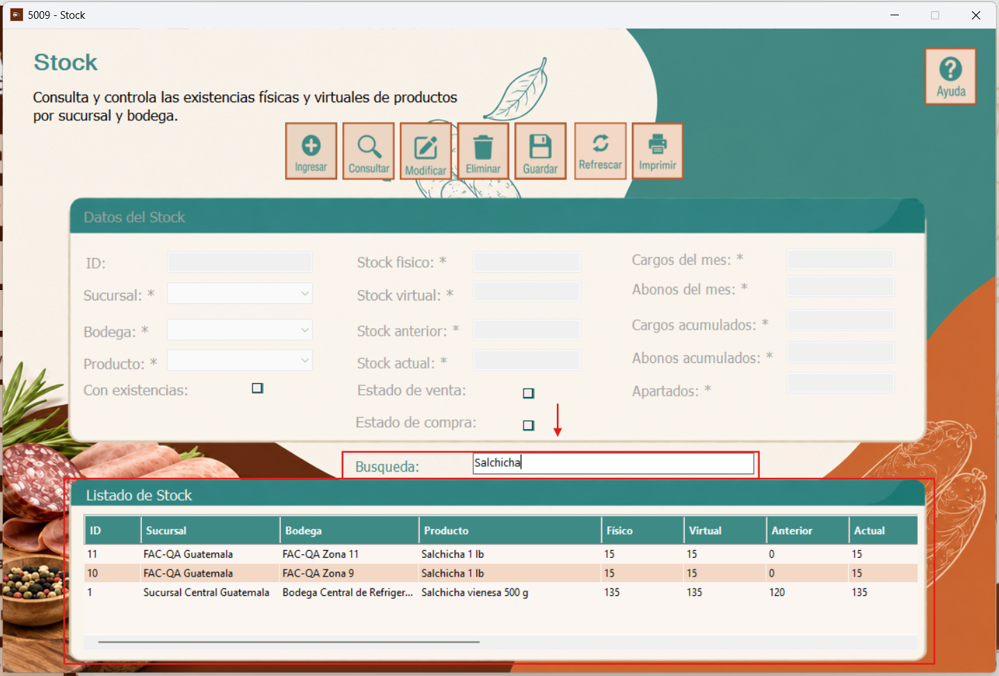

El formulario Stock permite consultar y administrar las existencias físicas y virtuales de los productos, organizadas por sucursal y bodega. También presenta información sobre movimientos, saldos y cantidades apartadas.
Al abrir la ventana 5009 - Stock, se muestra en la parte superior la barra de opciones para gestionar los registros, además del botón Ayuda ubicado a la derecha. En el centro aparece el apartado Datos del Stock, que contiene los campos de cada registro. En la parte inferior se encuentra el buscador y el Listado de Stock, donde pueden visualizarse los productos asociados a sus sucursales y bodegas, junto con sus existencias.

En la barra superior se encuentran los botones Ingresar, para iniciar un nuevo registro; Consultar, para revisar información; Modificar, para editar el registro seleccionado; Eliminar, para solicitar su eliminación; y Guardar, para registrar los cambios. El botón Refrescar permite actualizar la información mostrada y Imprimir proporciona acceso a la función de impresión. El botón Ayuda abre las instrucciones de uso del formulario.
Antes de modificar o eliminar un registro, debe seleccionarse la fila correspondiente en el listado.
En el apartado Datos del Stock se identifican la Sucursal, la Bodega y el Producto relacionados con cada registro. También se muestran el identificador y las cantidades de stock físico, stock virtual, stock anterior y stock actual.
El formulario incluye los campos de cargos y abonos del mes, cargos y abonos acumulados y apartados, así como las casillas Con existencias, Estado de venta y Estado de compra. Los campos marcados con un asterisco (*) se identifican visualmente como obligatorios en el formulario.
Para ingresar o modificar datos, utilice la opción correspondiente de la barra superior y complete los campos que el sistema habilite.

Para localizar un producto, escriba parte de su nombre en el campo Búsqueda. El Listado de Stock permite revisar los registros coincidentes, indicando su sucursal, bodega, producto y cantidades de stock. En el ejemplo se escribe Salchicha y se muestran los productos relacionados en la tabla inferior.
